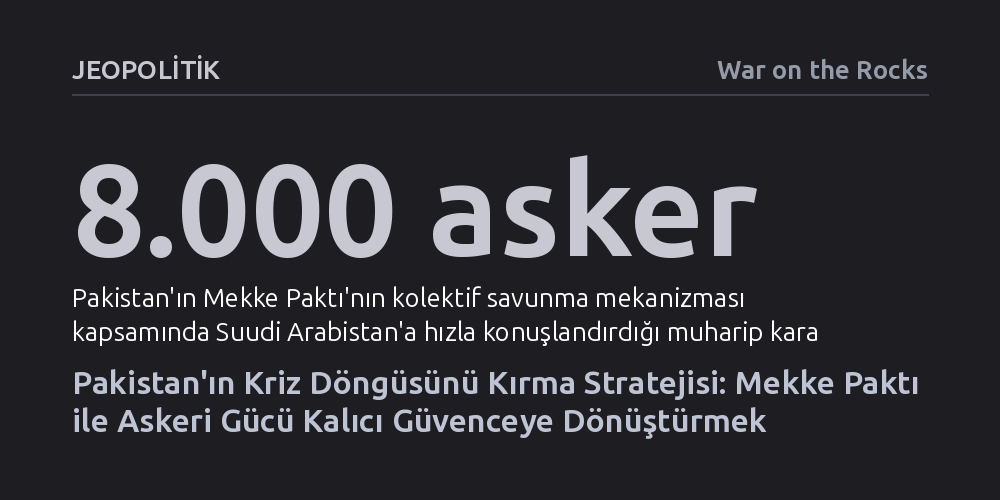

JEOPOLITIK · War on the Rocks · 2026-10-15
Pakistan, Suudi Arabistan ve Türkiye'yle kurduğu Mekke Paktı sayesinde askeri gücünü kalıcı bir bölgesel güvenlik mimarisine dönüştürerek büyük güçlerin geçici krizlerine bağımlı olma döngüsünü kırmayı amaçlıyor. İttifak; Körfez sermayesi, Türk savunma sanayisi ve Pakistan'ın muharip kapasitesini NATO tarzı bir kolektif savunma şemsiyesinde birleştiriyor.
Körfez güvenliğinin yalnızca Amerikan korumasına dayandığı varsayımını sarsarak, orta ölçekli güçlerin tamamlayıcı yeteneklerle kendi özerk savunma mimarilerini inşa edebileceğini gösterir.

Pakistan, Suudi Arabistan ve Türkiye, 31 Ağustos 2026'da Riyad'da Mekke Savunma Anlaşması için daimi bir sekretarya kurarak bölgesel dengeleri kökten değiştirebilecek bir adım attı. Üç yıllık süreyle ilk genel sekreterliğini Pakistan'ın üstlendiği bu yapı, Eylül 2025'te imzalanan Suudi-Pakistan savunma mutabakatına dayanıyor. Ancak Ağustos 2026'da Türkiye'nin de katılımıyla anlaşma, basit bir ikili yardımlaşma protokolü olmaktan çıkıp NATO modelini andıran çok taraflı bir kolektif savunma paktına dönüştü.
İttifakın temel gücü, üyelerin birbirini tamamlayan yeteneklerinde yatıyor: Suudi Arabistan'ın devasa finansal kaynakları ve Körfez'deki siyasi ağırlığı, Türkiye'nin NATO tecrübesiyle harmanlanmış gelişkin savunma sanayisi (özellikle İHA'lar, elektronik harp ve ortak üretim kabiliyeti) ve Pakistan'ın nükleer caydırıcılığa sahip, sahada sınanmış muazzam muharip ordusu tek bir çatıda birleşiyor.
Kağıt üzerindeki taahhütlerin sahaya yansıması ise gecikmedi. 5 Ekim 2026'da Suudi Arabistan'a yönelik artan Husi füze ve İHA saldırıları üzerine paktın kolektif savunma maddesi ilk kez fiilen devreye sokuldu. Pakistan derhal krallığa yaklaşık 8.000 asker, 16 adet JF-17 savaş uçağı ve HQ-9 hava savunma bataryası sevk etti. Bu operasyonel refleks, İslamabad'ın 2015'teki Yemen savaşına asker göndermeyi reddeden mesafeli tutumunun tamamen terk edildiğini ve paktın hızla işleyen bir askeri mekanizmaya dönüştüğünü kanıtlıyor.
Pakistan kurulduğu günden bu yana jeopolitik önemini hep başkalarının acil krizleriyle kazandı. 1971'de ABD ile Çin arasındaki tarihi yakınlaşmanın arabuluculuğundan Sovyet-Afgan savaşına, 11 Eylül sonrası Terörle Mücadele operasyonlarından İran gerilimlerine kadar İslamabad, büyük güçlerin kapısını çaldığı vazgeçilmez bir istasyon oldu. Ne var ki bu stratejik pencereler kapandığında, Washington'ın ilgisi azaldı, askeri ve mali yardımlar kesildi ve Pakistan derin bir ekonomik kırılganlıkla baş başa bırakıldı.
Bugünkü girişimi geçmişten ayıran en önemli fark, tek bir hamiden ya da geçici bir bölgesel çatışmadan kaynaklanmaması. ABD'nin Körfez'e yönelik güvenlik taahhütlerine dair artan belirsizlikler, Suudi Arabistan'ın çok boyutlu caydırıcılık arayışı ve Türkiye'nin savunma sanayisini bölgesel ölçekte kurumsallaştırma isteği aynı anda örtüştü. Pakistan, 10 milyar dolarlık kur istikrarı desteğine muhtaç olacak kadar kırılgan ekonomisine rağmen, elindeki yegane karşılaştırmalı üstünlük olan muharip askeri gücünü kalıcı bir pazarlık gücüne dönüştürmeye çalışıyor.
Büyük güçlerle himaye altındaki küçük devletler arasındaki geleneksel ittifaklarda, tam bir doktrinel uyum ve ortak tehdit algısı aranır. Ancak orta ölçekli güçler arasındaki güney-güney iş birliklerinde mantık farklı işliyor. Yazarların vurguladığı gibi, "orta güçler bağlamında tamamlayıcı uzmanlık ve iş bölümü, ittifakın inandırıcılığı açısından eşit derecede önemli olabilir." Tek bir ülkenin tek başına üstlenemeyeceği caydırıcılık yükü, ortak kaynak havuzuyla hafifletiliyor.
Geçmişte Arap Birliği'nin 1950 tarihli Ortak Savunma Antlaşması veya İslam Ordusu gibi girişimlerin kâğıt üzerinde kalıp dağılmasının nedeni, tek bir çatışmaya odaklanmaları ve iç rekabetlerle felç olmalarıydı. Mekke Paktı'nda kurulan daimi sekretarya ise her yeni krizde siyasi onay arama maliyetini düşürüyor; üç ülkenin askeri bürokrasisinde kurumsal bağlar oluşturarak ortak tatbikatların ve müşterek savunma üretiminin kesintisiz sürmesini sağlıyor.
Paktın geleceği, üyelerin karmaşık dış politika dengelerini koruyabilmesine bağlı. Pakistan bir yandan Suudi sınırlarını korumak için muharip güç konuşlandırırken, diğer yandan Washington ile Tahran arasında barış arabuluculuğu yürütüyor ve İran'la sınır ticaretini canlı tutuyor. İslamabad'ın Yemen'deki hava saldırılarına doğrudan katıldığını reddedip varlığını sadece savunma amaçlı olarak nitelendirmesi, Tahran'ı kışkırtmadan taahhütlerini yerine getirmeye dayalı hassas bir denge gözettiğini gösteriyor.
Benzer bir asimetri Hindistan boyutunda da geçerli. Suudi Arabistan ve Türkiye'nin Hindistan ile derin ekonomik ilişkileri bulunuyor; olası bir Hindistan-Pakistan savaşında doğrudan cepheye girmeleri beklenmiyor. Fakat paktın varlığı, kriz anında Pakistan'a sağlanabilecek istihbarat, mühimmat, hava savunma ve diplomatik destek ihtimalini canlı tutarak Yeni Delhi'nin askeri hesaplarını zorlaştırıyor. Diğer taraftan, Türkiye'nin savunma sanayisinde ABD menşeli bileşenlerin bulunması ve NATO kısıtlamaları, üçlü ortak üretimin bağımsız ve yerli teknolojilere dayanmasını zorunlu kılıyor.
ABD yönetimi müttefiklerinin kendi güvenlik maliyetlerini üstlenmesini ve yük paylaşımını uzun süredir talep ediyor. Mekke Paktı bu açıdan Amerikan güvenlik şemsiyesini yıkmayı hedeflemiyor; tersine, ABD'nin doğrudan asker ve bütçe ayırmak istemediği alanlarda caydırıcılık sağlayan tamamlayıcı bir bölgesel katman işlevi görüyor. Nitekim Pakistan'ın Husi tehdidine karşı üstlendiği koruma rolü, daha önce doğrudan Amerikan ordusunun yürüttüğü yıpratıcı bir misyondu.
Ancak yerel savunma ağlarının güçlenmesi, kaçınılmaz olarak ortakların stratejik özerkliğini artırıyor. Kendi aralarında askeri üretim ve siyasi koordinasyon kuran başkentler, Washington'ın onayına daha az ihtiyaç duyuyor. ABD bu gelişmeyi dışlamak yerine doğru yönetebilirse bölgede daha az maliyetli bir caydırıcılık kazanabilir; aksi takdirde Pakistan, elindeki stratejik askeri kartı başka küresel güçlerin hizmetine sunmaktan çekinmeyecektir.